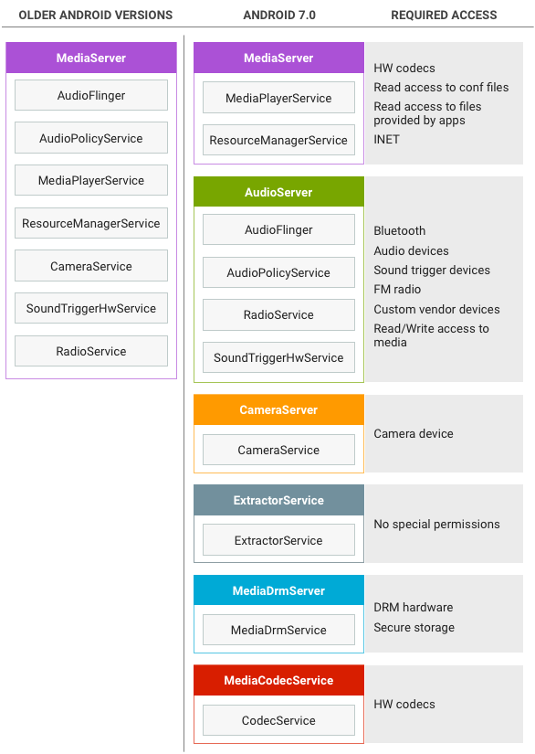
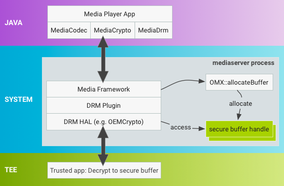
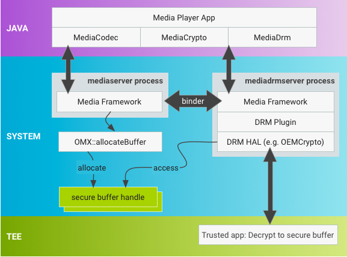

In this document
To improve device security, Android 7.0 breaks up the monolithic
mediaserver process into multiple processes with permissions and
capabilities restricted to only those required by each process. These changes
mitigate media framework security vulnerabilities by:
- Splitting AV pipeline components into app-specific sandboxed processes.
- Enabling updatable media components (extractors, codecs, etc.).
These changes also improve security for end users by significantly reducing the severity of most media-related security vulnerabilities, keeping end user devices and data safe.
OEMs and SoC vendors need to update their HAL and framework changes to make
them compatible with the new architecture. Specifically, because vendor-provided
Android code often assumes everything runs in the same process, vendors must
update their code to pass around native handles (native_handle)
that have meaning across processes. For a reference implementation of changes
related to media hardening, refer to frameworks/av and
frameworks/native.
Architectural changes
Previous versions of Android used a single, monolithic
mediaserver process with great many permissions (camera access,
audio access, video driver access, file access, network access, etc.). Android
7.0 splits the mediaserver process into several new processes that
each require a much smaller set of permissions:

Figure 1. Architecture changes for mediaserver hardening
This new architecture ensures that even if a process is compromised, malicious code does not have access to the full set of permissions previously held by mediaserver. Processes are restricted by SElinux and seccomp policies.
Note: Because of vendor dependencies, some codecs
still run in the mediaserver and consequently grant
mediaserver more permissions than necessary. Specifically, Widevine
Classic continues to run in the mediaserver for Android 7.0.
MediaServer changes
In Android 7.0, the mediaserver process exists for driving
playback and recording, e.g. passing and synchronizing buffers between
components and processes. Processes communicate through the standard Binder
mechanism.
In a standard local file playback session, the application passes a file
descriptor (FD) to mediaserver (usually via the MediaPlayer Java
API), and the mediaserver:
- Wraps the FD into a Binder DataSource object that is passed to the extractor
process, which uses it to read from the file using Binder IPC. (The
mediaextractor doesn't get the FD but instead makes Binder calls back to the
mediaserverto get the data.) - Examines the file, creates the appropriate extractor for the file type
(e.g. MP3Extractor, or MPEG4Extractor), and returns a Binder interface for the
extractor to the
mediaserverprocess. - Makes Binder IPC calls to the extractor to determine the type of data in the file (e.g. MP3 or H.264 data).
- Calls into the
mediacodecprocess to create codecs of the required type; receives Binder interfaces for these codecs. - Makes repeated Binder IPC calls to the extractor to read encoded samples,
uses the Binder IPC to send encoded data to the
mediacodecprocess for decoding, and receives decoded data.
In some use cases, no codec is involved (such as an offloaded playback where encoded data is sent directly to the output device), or the codec may render the decoded data directly instead of returning a buffer of decoded data (video playback).
MediaCodecService changes
The codec service is where encoders and decoders live. Due to vendor dependencies, not all codecs live in the codec process yet. In Android 7.0:
- Non-secure decoders and software encoders live in the codec process.
- Secure decoders and hardware encoders live in the
mediaserver(unchanged).
An application (or mediaserver) calls the codec process to create a codec of the required type, then calls that codec to pass in encoded data and retrieve decoded data (for decoding) or to pass in decoded data and retrieve encoded data (for encoding). Data transfer to and from codecs uses shared memory already, so that process is unchanged.
MediaDrmServer changes
The DRM server is used when playing DRM-protected content, such as movies in Google Play Movies. It handles decrypting the encrypted data in a secure way, and as such has access to certificate and key storage and other sensitive components. Due to vendor dependencies, the DRM process is not used in all cases yet.
AudioServer changes
The AudioServer process hosts audio related components such as audio input and output, the policymanager service that determines audio routing, and FM radio service. For details on Audio changes and implementation guidance, see Implementing Audio.
CameraServer changes
The CameraServer controls the camera and is used when recording video to
obtain video frames from the camera and then pass them to
mediaserver for further handling. For details on changes and
implementation guidance for CameraServer changes, refer to
Camera Framework
Hardening.
ExtractorService changes
The extractor service hosts the extractors, components that parse
the various file formats supported by the media framework. The extractor service
is the least privileged of all the services—it can't read FDs so instead
it makes calls onto a Binder interface (provided to it by the
mediaserver for each playback session) to access files.
An application (or mediaserver) makes a call to the extractor
process to obtain an IMediaExtractor, calls that
IMediaExtractor to obtain IMediaSources for the track
contained in the file, and then calls IMediaSources to read data
from them.
To transfer the data between processes, the application (or
mediaserver) includes the data in the reply-Parcel as part of the
Binder transaction or uses shared memory:
- Using shared memory requires an extra Binder call to release the shared memory but is faster and uses less power for large buffers.
- Using in-Parcel requires extra copying but is faster and uses less power for buffers smaller than 64KB.
Implementation
To support the move of MediaDrm and MediaCrypto
components into the new mediadrmserver process, vendors must change
the allocation method for secure buffers to allow buffers to be shared between
processes.
In previous Android releases, secure buffers are allocated in
mediaserver by OMX::allocateBuffer and used during
decryption in the same process, as shown below:

Figure 2. Android 6.0 and lower buffer allocation in mediaserver.
In Android 7.0, the buffer allocation process has changed to a new mechanism
that provides flexibility while minimizing the impact on existing
implementations. With MediaDrm and MediaCrypto stacks
in the new mediadrmserver process, buffers are allocated
differently and vendors must update the secure buffer handles so they can be
transported across binder when MediaCodec invokes a decrypt
operation on MediaCrypto.

Figure 3. Android 7.0 and higher buffer allocation in mediaserver.
Using native handles
The OMX::allocateBuffer must return a pointer to a
native_handle struct, which contains file descriptors (FDs) and
additional integer data. A native_handle has all of the advantages
of using FDs, including existing binder support for
serialization/deserialization, while allowing more flexibility for vendors who
don't currently use FDs.
Use native_handle_create() to allocate the native handle.
Framework code takes ownership of the allocated native_handle
struct and is responsible for releasing resources in both the process where
the native_handle is originally allocated and in the process where
it is deserialized. The framework releases native handles with
native_handle_close() followed by
native_handle_delete() and serializes/deserializes the
native_handle using
Parcel::writeNativeHandle()/readNativeHandle().
SoC vendors who use FDs to represent secure buffers can populate the FD in
the native_handle with their FD. Vendors who don't use FDs can
represent secure buffers using additional fields in the
native_buffer.
Setting decryption location
Vendors must update the OEMCrypto decrypt method that operates on the
native_handle to perform any vendor-specific operations necessary
to make the native_handle usable in the new process space (changes
typically include updates to OEMCrypto libraries).
As allocateBuffer is a standard OMX operation, Android 7.0
includes a new OMX extension
(OMX.google.android.index.allocateNativeHandle) to query for this
support and an OMX_SetParameter call that notifies the OMX
implementation it should use native handles.